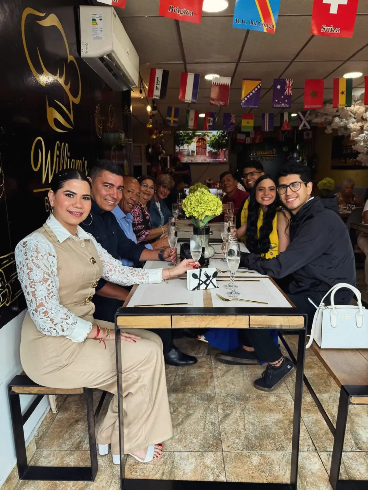
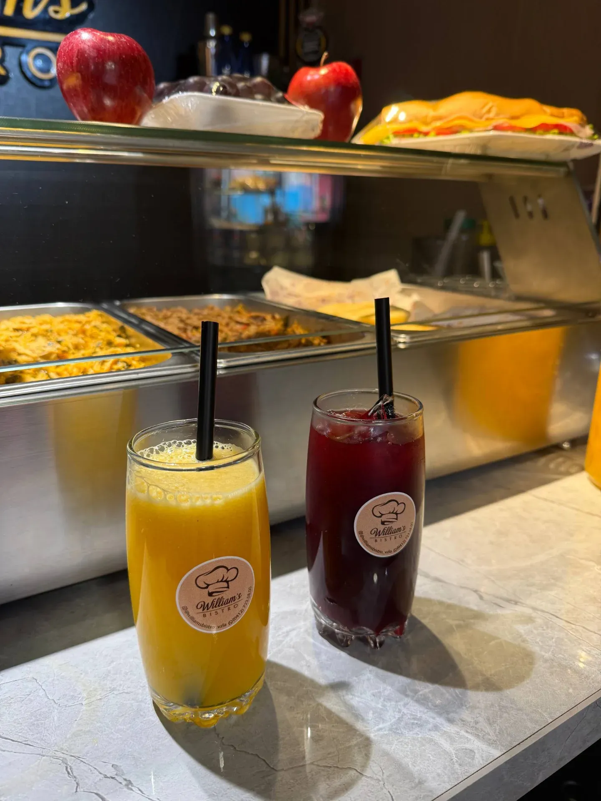

Sándwich Gourmet
Pan artesanal tostado, pechuga de pollo a la parrilla, queso fundido, aguacate, tomate fresco y aderezo de la casa en una combinación que redefine el sándwich.
Explorar en el Menú →Platos exquisitos y especialidades preparadas al momento, diseñadas para ofrecer una experiencia gastronómica de alto nivel en el corazón de Maturín.
Abierto 7:00 am – 10:00 pm

En William's Bistro nos dedicamos a ofrecer una experiencia culinaria excepcional en Maturín. Cada plato es una obra de arte, preparada al momento con ingredientes rigurosamente seleccionados para garantizar la máxima frescura y calidad en nuestra carta.
Desde sándwiches gourmet y almuerzos completos hasta refrescantes jugos naturales, nuestro menú interactivo digital está pensado para deleitar tu paladar con sabores extraordinarios en un ambiente sofisticado y acogedor.
Ingredientes
de primera
Servicio
ágil y rápido
Hecho con
pasión
Tres razones para visitarnos hoy. Cada una preparada con dedicación y el mejor de los ingredientes.
Pan artesanal tostado, pechuga de pollo a la parrilla, queso fundido, aguacate, tomate fresco y aderezo de la casa en una combinación que redefine el sándwich.
Explorar en el Menú →
Frutas frescas exprimidas al momento. Naranja, mango, papaya, fresa y sandía listas para refrescar tu día. Sin azúcar añadida, solo el sabor natural de la fruta.
Explorar en el Menú →
La combinación perfecta para empezar el día: huevos a tu gusto, pan tostado, queso, jamón, lonjas de queso de mano y café recién hecho. Energía para toda la mañana.
Explorar en el Menú →Calle 21 (Bombona), al lado de la casa de las togas
Lunes a Domingo:
7:00 am – 10:00 pm